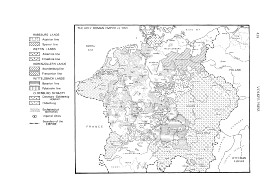
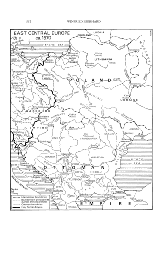
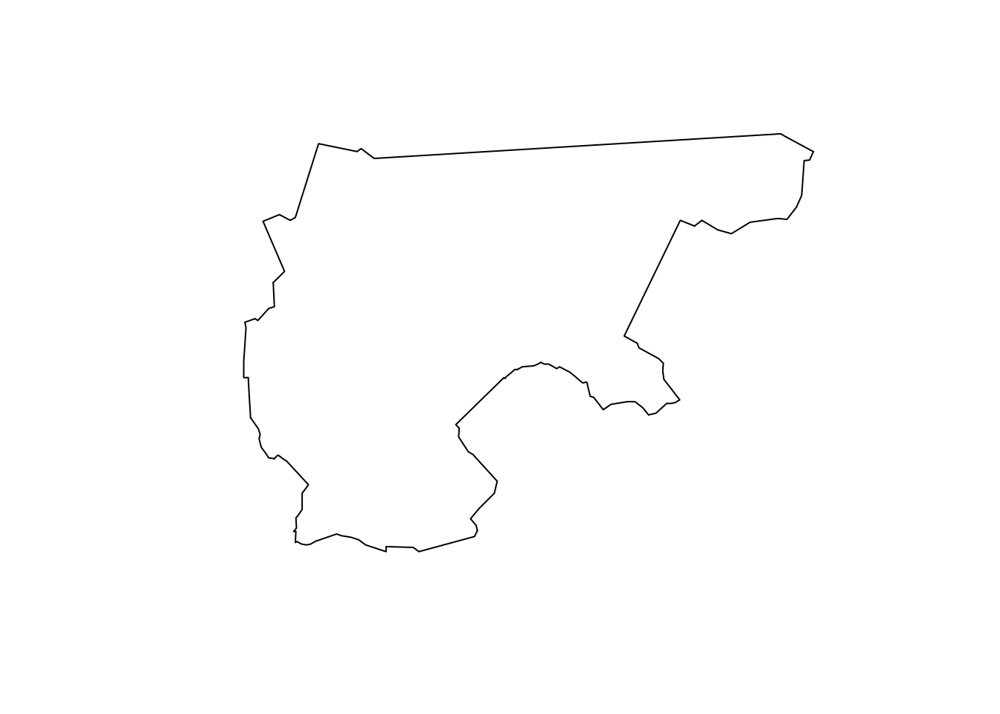
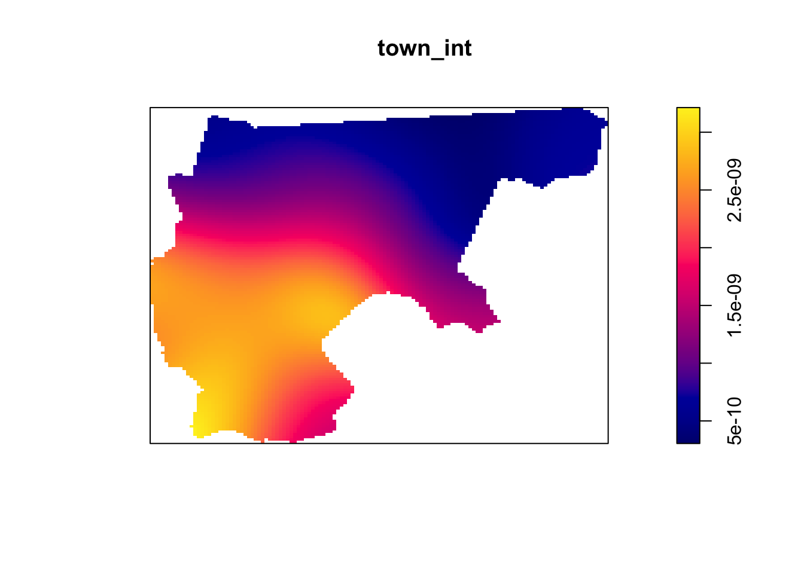
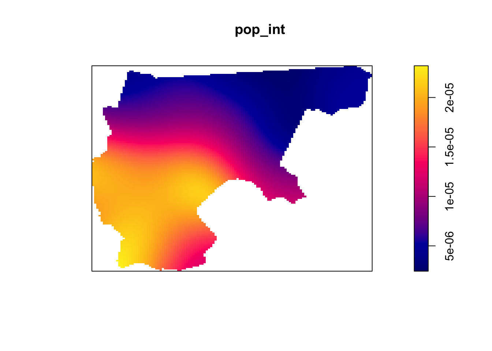

Welcome to the midterm practice problems! As was mentioned during class, here we provide you with a set of tools for comparing the first-order and/or second-order properties of spatial data, and your job is to use them to explore and assess the evidence for different hypotheses.
Since these problems aren’t graded, the structure will look like the homeworks you’ve done, except in the place of public tests will be the actual solutions for each question. However, I recommend you try solving them yourself before looking at the solutions!
(For students enrolled in the course, this will be copied into your home directory on Positron! So, you should access it via the Midterm_Guide folder within Positron, so that you can edit the code cells and work on the individual problems at your own pace!)
Overview: The Spread of Protestantism in 16th-Century Europe
In this case, we’ll explore two different hypotheses regarding the Protestant Reformation, specifically as it had affected towns throughout the so-called Holy Roman Empire—which we’ll shorten to HRE from now onwards—by 1546 AD:
Did Protestantism spread to areas with high population density, beyond what would be expected on the basis of the density itself? This can be stated a bit more clearly in terms of null and alternative hypotheses:
The null hypothesis here is:
\(\mathcal{H}_0\): The likelihood that a Protestant church (a church which abolished the Catholic Mass) appears at a location \(\mathbf{s}_i\) is directly proportional to the population density at that point.
Then, the alternative hypothesis is:
\(\mathcal{H}_A\): There exists some population density threshold \(p^*\) such that Protestant churches appear at locations \(\mathbf{s}_i^*\) with population density greater than\(p^*\) more often than would be expected solely on the basis of this population density.
The reason this hypothesis is stated somewhat laboriously like this is because we want to see whether there are network effects in the nascent towns and cities of the HRE: whether ideas spread at an accelerated rate as population density increases (a key hypothesis in the literature on diffusion of innovations).
Here the null and alternative hypotheses can be operationalized more simply than in the previous case: we just want to know whether the mean distance of the Protestant churches from Lutherhaus is significantly lower than the mean distance we would see if the Protestant churches were distributed solely on the basis of population density.
Posit.Cloud doesn’t respond very well to a plot of the entire dataset, so instead the following cell takes a sample of size \(N = 200\) towns and generates a plot of:
Their protestant status (represented by the color of each circle), and
Their population (represented by the size of each circle).
You can run it a few times to get a feel for what the sample looks like.
If you’re wondering why the points don’t really line up with modern-day countries, it’s because Luther’s campaign was carried out across the Holy Roman Empire, which broke apart to form several of the countries which now exist in Europe, but was mostly comprised of a bunch of Kingdoms across modern-day Germany. The following two maps show the main extent in 1550, and then the “edge” facing the Ottoman Empire in 1570, respectively (courtesy of TA Christy!!!)


The protestant variable for the data we’re using is based on a survey conducted in 1546, so this map showing the extent of the Holy Roman Empire circa 1555 gives a good picture of the regions within which these points were measured.
Here, since we care in particular about the cities which adopted protestantism, our point pattern will represent churches which had abolished the Catholic Mass by 1546, and we will evaluate our two hypotheses on the basis of these points, relative to the overall population distribution of the Holy Roman Empire (as measured by the pop variable across all observations, regardless of protestant status).
As the following output shows, this will give us a ppp object with \(N = 1236\) points:
town_sf |>count(protestant)
protestant
n
geometry
0
964
MULTIPOINT ((679048.9 65801…
1
1236
MULTIPOINT ((742129.9 70916…
Question 1: Constructing the Observation Window
For the first time, rather than the convex hull operation we’ve used in previous homeworks, here we’ll instead construct a concave hull of all points to form our observation window. This is mainly because, unlike many of the previous cases, here the Holy Roman Empire had important concavities, relating mainly to the fact that the Kingdoms of Poland and Lithuania were sovereign from the HRE. This means that if we use the convex hull, we would include a large land mass with no points in it, not because there were no towns there, but because these two Kingdoms are not included in our observation area.
So, our observation window construction will proceed as follows:
Use the concaveman() function from the concaveman library, with a concavity value of 3, to construct the concave hull of the MULTIPOINT geometry from the previous step
Due to rounding issues, spatstat will reject 5 of our points unless we add a buffer of 5 meters around the concave hull constructed in Step 1. So, take the result of Step 1 and add a 5 meter buffer around it, to complete the observation window construction!
Once you have constructed hull_sf, use the plot() function from Base R to display the shape of the observation window.
Response:
hull_sf <-NULL# Replace with concave hull + 5m buffer# And plot the shape of hull_sf# Your code here
Solution:
hull_sf <- town_sf |># This would work if Posit.Cloud had a post-2020 version of GEOS...#sf::st_concave_hull(ratio=0.2) |> concaveman::concaveman(concavity=3) |> sf::st_buffer(dist=5)plot(hull_sf)

Question 2: Comparing Population Densities with Point-Based Densities
Here, on the basis of prot_sf, the sf object wherein each observation is a town, we will construct two different ppp objects:
A “plain” unmarkedppp object called town_ppp, wherein each point corresponds to the location of a town in our sample, and
A markedppp object called pop_ppp, where each of the points in town_ppp is associated with a mark, in this case the numeric population of the town.
However, you don’t need to worry too much about this part, since on the actual midterm you will not need to worry about marked point processes, just “plain” (non-marked) ppp objects. The purpose of this part is just to show how, if we use only the distribution of points itself, without the population data, we get an estimated population intensity quite close to the “real” population intensity function.
Question 2.1: The Unmarked ppp Object
For this question, use the as.ppp() function from spatstat to construct an unmarkedppp object called town_ppp, wherein each point simply represents one of the towns in our dataset. Then, use R’s built-in plot() function to display the distribution of points in town_ppp:
Response:
town_ppp <-NULL# Replace with call to as.ppp()# Then plot the constructed town_ppp object# Your code here
Now, since the towns don’t all have equal population, your instinct may be that we should not construct a population-density intensity function solely on the basis of this unmarked ppp object. To get a more accurate estimation of population density, here construct a new ppp object called pop_ppp where each point is now marked with the population of the town at that point.
As a big hint: if you plug an sf object with only one data attribute into spatstat’s as.ppp() function, it will use that one data attribute as the mark for each point.
Now, using the density() and plot() functions, plot the estimated intensity functions from these two ppp objects… Do they differ enough to justify the more “advanced” approach using the marked point process?
Response:
town_int <-NULL# Replace with estimation of intensity from non-marked pointspop_int <-NULL# Replace with estimation of intensity from population-marked points# And plot the two estimated intensity functions using plot()# Your code here
Solution:
# Town intensitytown_int <-density(town_ppp)plot(town_int)

# And population-weighted intensitypop_int <-density(pop_ppp, weights=pop_ppp$marks)plot(pop_int)

Question 3: Protestantism by Population Density
I mentioned in class how the Earth Mover’s Distance takes way too long on Posit.Cloud. So, for this part, we’re going to use quadrat counts instead. An advantage of using quadrat counts is that, though the square-by-square comparisons I mentioned in class are the “default” behavior in spatstat, the spatstat book (on page 178) also provides code for splitting a polygon into meaningful regions rather than just squares. So, here we’ll use this code to find a split of the entire HRE region into a high-population region and a low-population region. Then, our quadrat comparisons become both more simple and more meaningful: we can compare the observed count of protestant towns in high-population regions with simulated counts of protestant towns in the same high-population regions, across \(N_{\text{MC}}\) simulations.
So, with these three equal-area regions in hand, let’s count how many of the observed protestant churches fell within low, middle, and high-population areas!
Question 3.1: Quadrat Counts for Observed Protestant Churches
Now that we’ve used the population data to construct a ppp object representing the population distribution, which we then used to split the entire Holy Roman Empire into low, middle, and high-population subregions, let’s construct a ppp object called protestant_ppp representing just the locations of the protestant towns. In other words, this will be similar to the ppp object creation above, but we want to use only the towns where protestant == 1.
Once the ppp object is constructed, use the Base R plot() function to display the points and observation window for protestant_ppp.
Response:
prot_sf <-NULL# Construct sf object containing only protestant townsprot_ppp <-NULL# Use prot_sf to construct a ppp object for protestant towns# And plot the prot_ppp object# Your code here
Question 3.2: Low, Medium, and High-Population Counts
This is where the beautiful of the quadratcount() function comes in. Whereas above we used a somewhat-complicated procedure to construct our low, middle, and high-population regions, now that we have that on hand, we can simply provide it as the tess argument to quadratcount(), and it will automatically give us counts for the number of points in each region!
So, use the pop_areas object constructed above as the tess argument to quadratcount to obtain counts for the number of points in each region, and store these counts as a named vector called obs_prot_counts, where the entries have names "Low", "Medium", and "High", respectively. In the last line of your code cell, display the obs_prot_counts vector.
Response:
obs_prot_counts <-NULL# Replace with call to quadratcount()# And display the contents of obs_prot_counts# Your code here
What does this distribution of counts “mean”? Do we have a greater-than-expected proportion of protestant towns in high-population regions? The key way to find out, that we’ve discussed in class, is to simulate the placement of protestant churches across the Holy Roman Empire, under the null hypothesis that protestantism “appeared” in direct proportion to population density, and then compare our observed test statistics to test statistics obtained via simulation.
In this case, since our hypothesis concerns the spread of protestantism to high-population areas of the Holy Roman Empire, our test statistic will simply be the number of protestant churches appearing in the “High” region, among the three regions computed above and stored in pop_areas.
Question 4.1: Simulating a Single Point Pattern of Protestant Churches
Before computing the full set of \(N_{\text{MC}}\) simulations, it’s usually helpful to just try and compute one simulation. Once you know that your simulation code is correct, you can then feel confident running it in a loop \(N_{\text{MC}}\) times!
So, for this question, write a function called gen_sim_ppp() which creates a ppp object simulating the placement of \(N = 1236\) protestant churches across the HRE if this placement followed the population distribution (which we estimated above and stored as pop_int):
Response:
set.seed(6805)gen_sim_ppp <-function() {# Your code here: generate a number of points equal to the number of rows# in prot_sf, but with intensity function given by pop_intreturn(NULL)}sim_prot_ppp <-gen_sim_ppp()if (!all(is.null(sim_prot_ppp))) {plot(sim_prot_ppp)}
Question 4.2: Quadrat Counts for the Simulated Points
This simulated map of protestant churches is interesting to look at, but it doesn’t help us answer our question yet. We now need to count how many of our simulated points fall within low, medium, and high-population regions of the HRE! For this question, write a function called compute_quadrat_counts() which takes in a ppp object and produces a named vector representing the counts for the "Low", "Medium", and "High" areas. In other words, it should produce output in the same format as in Question 3.2 above (so that we can directly compare the observed counts computed in that question with the simulated count vectors produced in this question!).
Response:
compute_quadrat_counts <-function(sim_ppp) {# Your code herereturn(NULL)}compute_quadrat_counts(sim_prot_ppp)
Now that all the pieces of our Monte Carlo Simulation pipeline are ready to go, generate \(N_{\text{MC}}\) simulations under the null hypothesis, computing the quadrat counts for each, and store the results in an \(N_{\text{MC}}\)-row df object named full_count_df. You may use the provided gen_sims_ppp() function to efficiently generate a list containing \(N_{\text{MC}}\)ppp objects.
Response:
set.seed(6805)gen_sims_ppp <-function(num_sims) { prot_sims <- spatstat.random::rpoint(n =nrow(prot_sf),f = pop_int,nsim = num_sims )return(prot_sims)}full_count_df <-NULL# Your code here
Warning: The `x` argument of `as_tibble.matrix()` must have unique column names if
`.name_repair` is omitted as of tibble 2.0.0.
ℹ Using compatibility `.name_repair`.
Now that you have both the observed test statistic values in obs_prot_counts and the simulated test statistic values in full_count_df, combine them and plot their distribution using ggplot2’s geom_density() function, then superimpose the obseved test statistic value on this distribution using geom_vline():
Response:
mc_df <-NULL# Replace with code combining full_count_df and obs_prot_counts# And plot using ggplot# Your code here
Question 4.5: Proportion of Sims with More Extreme Test Stat Value
Here, even though we can see what the answer will be by looking at the plot above, you will sometimes be asked to compute something akin to a \(p\)-value… So, compute this \(p\)-value by calculating what proportion of the simulated test statistics have a value greater than or equal to our observed test statistic value (the number of Protestant churches within the High population regions).
Response:
q4_prop_more_extreme <-NULL# Replace with calculationq4_prop_more_extreme
On the midterm there may be one additional question asking you to interpret this result—the main point is writing the code that can get you to the result! So, for the response to the midterm question, you can just write a one-sentence conclusion like:
Since none of our \(N_{\text{MC}}\) simulations contained a count of Protestant churches in High-population regions as high as the observed count of Protestant churches in High-population regions, we can increase our confidence in the alternative hypothesis, that Protestant churches appeared in High-population regions even above what would be expected on the basis of these regions’ population densities.
Question 5: Distance from Lutherhaus
Run the following code to construct a new sf object called luther_sf, which contains just the point within the HRE where Luther’s home was located for most of his life. The cell will also plot this point, so you can see that it lies directly on the building!
In the following code cell, use the st_distance() function from sf to compute the distance from each point in prot_sf to the Lutherhaus. Then use mean() and as.numeric() from Base R to compute the mean distance as a “plain” numeric variable (as.numeric() will remove the unit—meters—from the value, which will make it easier to plot using ggplot() at the very end).
Response:
all_distances <-NULL# Replace with computation of pointwise distancesobs_mean_dist <-NULL# Replace with computation of mean distance, with units removed# And display the observed mean distance value# Your code here
Question 5.2: Interpreting the Observed Mean Distance
Is this… a high mean distance? A low mean distance? We have no way of knowing unless we compare it with a distribution of mean distances from Lutherhaus, which we can compute using the full_sims_list object we constructed in Question 4. So, in this cell:
Write a function compute_mean_dist() which takes in a ppp object and computes the mean distance from each point in the object to the Lutherhaus. Then
Use the lapply() function from Base R to call your compute_mean_dist() function on each of the simulated point patterns in full_sims_list
Note that, because st_distance() is fairly slow, this code cell will take way longer to run than any of the other cells in the notebook. So, make sure everything looks right, or perform some sanity checks (on smaller datasets, perhaps) before running the full code!
Response:
compute_mean_dist <-function(sim_ppp) {# Your code herereturn(NULL) # Replace with mean distance from points in sim_ppp to Lutherhaus}#compute_mean_dist(sims_list[[1]])sim_dists <-NULL# Replace with call to lapply()sim_dists |>head()
Question 5.3: Plotting the Observed Test Statistic
Now that you have (a) the observed mean distance from Lutherhaus, and (b) \(N_{\text{MC}}\) simulated mean distances from Lutherhaus, all that’s left is to plot the simulated distances in order to see whether our observed mean is lower than the simulated observed means, which would lend support to our alternative hypothesis! In the following code cell, use the geom_density() function from ggplot2 to plot the density of mean distances across the \(N_{\text{MC}}\) simulations, then use geom_vline() to superimpose the observed mean distance on top of this distribution:
Question 5.4: Proportion of Sims with More Extreme Test Stat Value
As you did in Question 4.4 above, here compute the proportion of simulations for which the mean distance was “more extreme” than (in this case, lower than) the observed mean distance:
Response:
q5_prop_more_extreme <-NULL# Replace with calculation
And, on the midterm there may be one additional question which simply asks you to interpret this plot in terms of the second hypothesis listed at the beginning of the assignment. Here, we see that the observed mean distance from Lutherhaus is pretty significantly smaller than any of the distances which were observed under the null hypothesis, so that we also have evidence that proximity to Lutherhaus had an effect on the likelihood of adopting Protestantism beyond what would be expected if this spread was just proportional to population density!